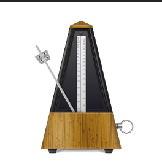

Partitura, TAB e números trabalhando juntos
Escolha o exercício, a visualização, o tom e o capotraste. Comece devagar e aumente somente quando todas as notas estiverem limpas.
Escolha o exercício, a visualização, o tom e o capotraste. Comece devagar e aumente somente quando todas as notas estiverem limpas.

40